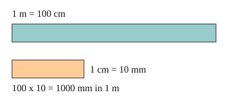

Part of Metric Units. Answer in the chat (1: ..., g: c), add sure or guess after any answer, and say done when finished.
Last time: how many mm are in 1 m? You said a) 100. It is b) 1000.

A pencil is about 15 cm, a room about 4 m, a town about 3 km: each unit fits a different size of thing. Metric units step by fixed factors (notes 1): 10 mm make a cm, 100 cm make a m, and 1000 m make a km. To go across two steps, multiply the two factors.
Q1. How many cm are in 4 m?
400
Right: 4 x 100 = 400 (notes 1).
Q2. How many m are in 3 km?
3000
Right: 3 x 1000 = 3000 (notes 1).
Q3. Ravi says there are 100 mm in a cm, since there are 100 cm in a m. What is wrong?
each step has its own factor. A cm is only 10 mm (sure)
Right: 1 cm = 10 mm, and 100 is the cm to m factor (notes 1).
You can now say how many of each smaller metric unit fit in a bigger one.
Change 2.5 m into cm.
b (sure)